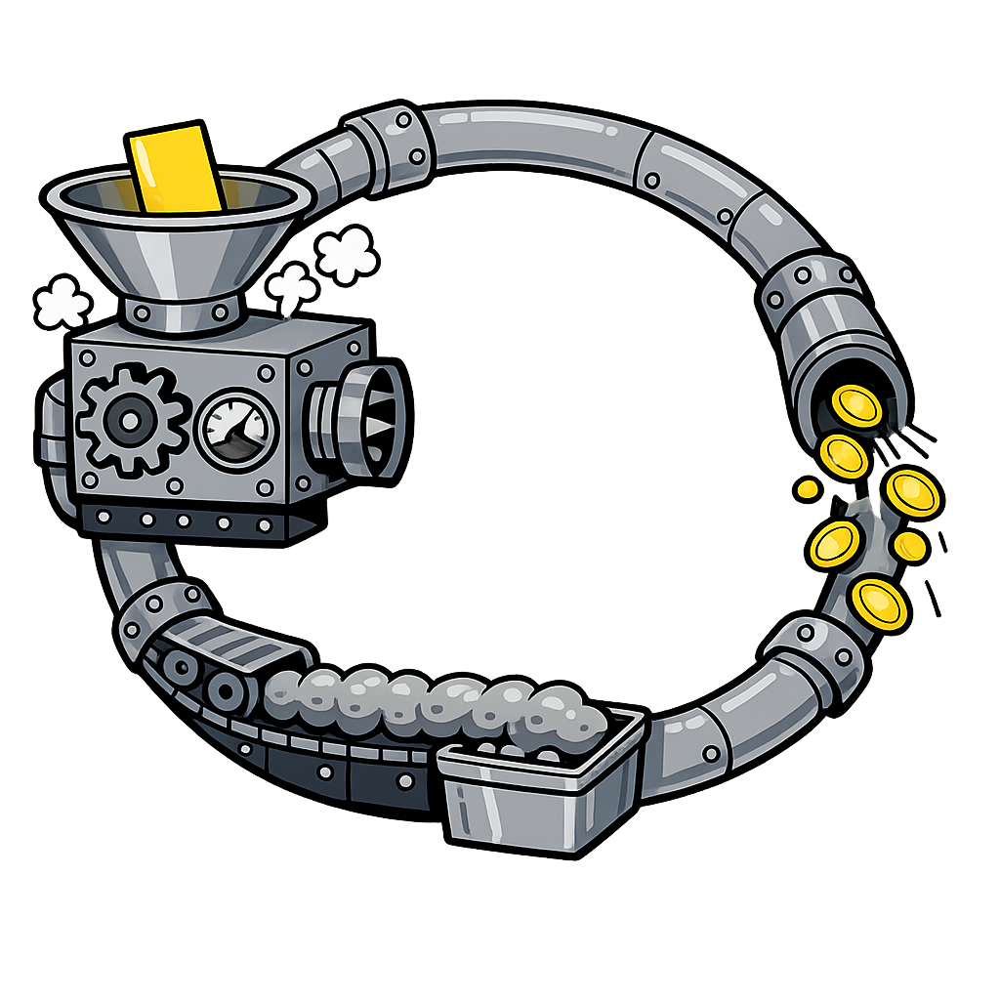
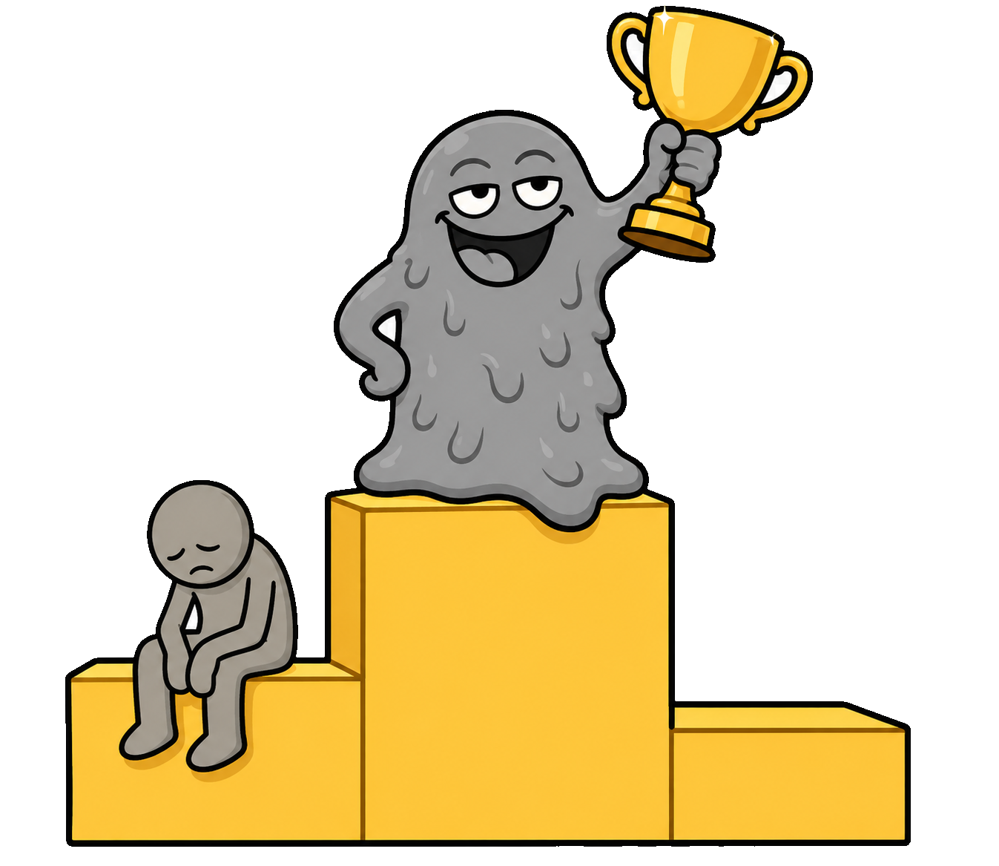

WHY?
full of garbage now...



AI IS EVIL
CONSPIRACY
pays for ATTENTION
slop wins.

ATTENTION IN.
GARBAGE OUT.

BROKEN
WORKING PERFECTLY✓
that is the problem.

a small, useful upgrade.
THE TELLS

six fingers
✓

a little too perfect
✓
too good to be true
✓
you can't stop the flood.
but stop being
FOOLED.
FOOLED.
pay attention on purpose
= you win.
= you win.
we'll keep explaining the weird machine.
keep your eyes open.